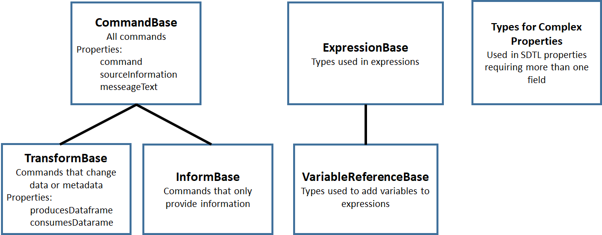
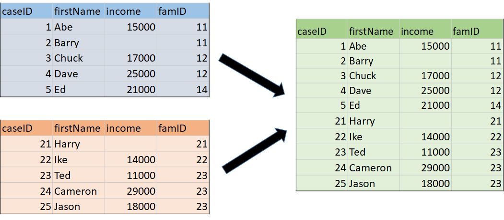
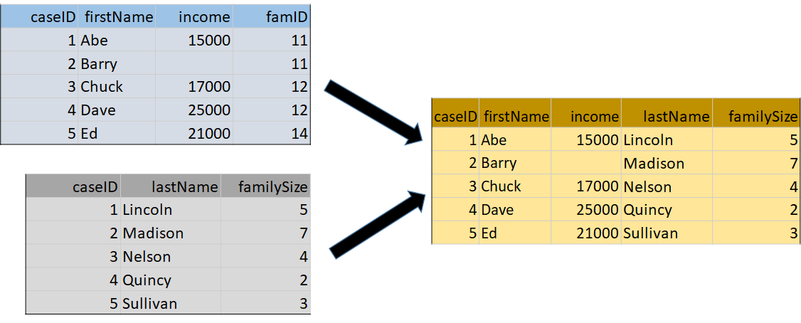
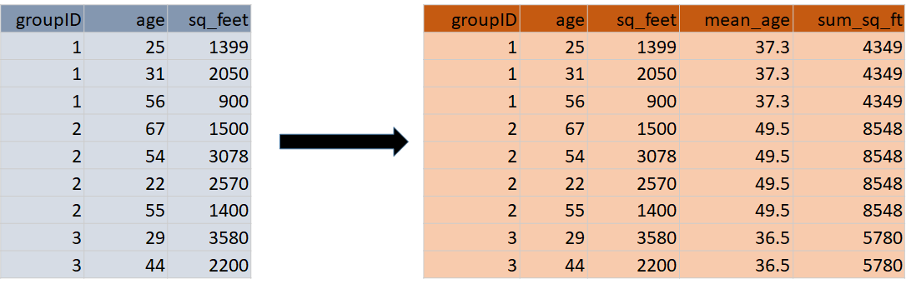
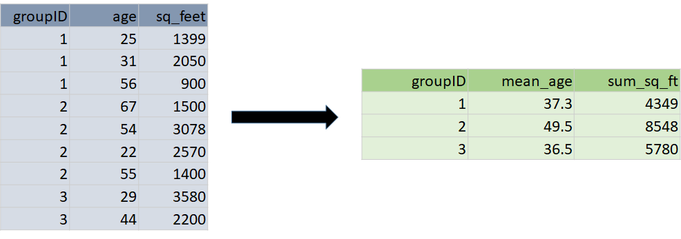

SDTL Command Language [1]¶
Overview¶
SDTL has been defined as a set of JSON (JavaScript Object Notation) schemas. Each schema is a “type” (“$type” in the schemas), which can include one or more “properties”. Properties are described by name/value pairs. The value of a property may be another SDTL type, and SDTL types are often nested in this way. A value may also be an array, which is an ordered list of values. However, all values are ultimately resolved into numbers, text strings, or boolean constants (True/False).
Figure 2 gives an example illustrating how SDTL types are nested inside other types. The source command is “RENAME VARIABLES (var10 = Age).“, which changes the name of variable “var10” to “Age” in the SPSS language. The corresponding SDTL command is Rename, which is given in both the “$type” and “command” properties in Figure 1. The original SPSS version is given in the originalSourceText of the sourceInformation property. The SDTL Rename command has only one property, renames, which can include one or more values of type RenamePair. In this case, we have only one RenamePair, which has two properties oldVariable and newVariable, each of which must be a VariableSymbolExpression type. A VariableSymbolExpression has only one property, VariableName, which must be a string. These strings are the old and new names for the variable, “var10” and “Age”.
SDTL is much more verbose than the SPSS version of the same command, but SDTL is much easier for a computer to manipulate. Every element in SDTL has a “$type” explaining where it fits in the SDTL schema. [2] We know that “var10” is the old variable name, because it is tagged with oldVariable. In contrast, a computer program would need to include code reproducing the syntax rules of the SPSS language to identify “var10” as the variable to be renamed in the original SPSS command.
Documentation and downloads for the SDTL Command Language are available at http://c2metadata.gitlab.io/sdtl-docs/. The COGS documentation system provides detailed descriptions of all SDTL types, and some descriptions are supplemented with examples and other documents.
Figure 2. Example SDTL: Rename command
{
"$type": "Rename",
"command": "rename",
"sourceInformation": {
"originalSourceText": "RENAME VARIABLES (var10 = Age)."
},
"renames": [
{
"$type": "RenamePair",
"oldVariable": {
"variableName": "var10",
"$type": "VariableSymbolExpression"
},
"newVariable": {
"variableName": "Age",
"$type": "VariableSymbolExpression"
}
}
]
}
SDTL Type Hierarchy¶
Types in SDTL are organized into groups, called “bases”, according to the hierarchy shown in Figure 3.
Figure 3. Type Hierarchy in SDTL
CommandBase¶
The SDTL types in CommandBase describe actions, like merging files or modifying the contents of a variable. CommandBase has two sub-categories:
- TransformBase includes commands that change data or metadata, like Compute, Rename, MergeDatasets, and SetDataType
- InformBase commands provide information, like Comment and Message
All commands inherit properties from CommandBase (command, sourceInformation, and messageText).
TransformBase¶
The types belonging to TransformBase are commands that change data or metadata. All commands in TransformBase also inherit properties from CommandBase to which it belongs:
| producesDataframe | Identifies the dataframes which this transform produces. |
| consumesDataframe | Identifies the dataframes which this transform acts upon. |
In Table 1 the commands in TransformBase are arranged into five functional sub-groups.
- Commands that create variables or change the values of a variable. Only four SDTL commands add or modify variables.
- Commands that change the metadata associated with a variable or dataframe. Statistical packages manage several types of metadata: variable names, labels, data type, display properties.
- Commands that read or write files.
- Commands that change the structure of a dataframe. The structure of a dataframes is changed by adding or dropping columns or rows.
- Commands that control the flow of operations in a script Command execution can be conditional (if.. then..else) or iterative.
InformBase¶
Table 2 shows informational commands that do not describe changes to the data. Although SDTL does not include commands that analyze data, these commands can be transcribed verbatim in an SDTL script with the Analysis command. Unsupported is used for commands that our Parser cannot translate into SDTL. Invalid is used when the parser recognizes the command in the source language but its syntax does not conform to expectations. NoTransformOp is used for source language commands that do not have a function in SDTL, like invoking a library of functions in the source language.
ExpressionBase¶
The SDTL types in Table 3 (ExpressionBase) are used in expressions, which may be numeric, text or logical. The most powerful of these types is FunctionCallExpression, which is discussed below. VariableReferenceBase (Table 4) is a subcategory of ExpressionBase used to describe the variables in an expression.
ExpressionBase includes types to describe lists and ranges of variables, numbers, and strings. Commands like Recode and SetDataFormat are often applied to many variables at the same time. The VariableRangeExpression identifies variables in contiguous columns in the dataframe by specifying the first and last variables in the set. A VariableListExpression consists of a list of individual variables (VariableSymbolExpression) and ranges (VariableRangeExpression).
Commands and functions may also require a list of values, like the cut_list() function which divides a numeric variable into categories at specified breakpoints. A ValueListExpression may consist of numbers or strings (NumericConstantExpression, StringConstantExpression) or ranges of numbers or strings (NumberRangeExpression, StringRangeExpression). In SDTL a list of values is a single expression, which simplifies the description of functions.
Types for Complex Properties¶
Table 5 includes types that were created to represent complex properties of other commands. For example, SourceInformation is a property of every command in CommandBase that shows the source of this command in its original language. In addition to the text of the original command, SourceInformation provides the location of the original command in the command script. SourceInformation has the following properties.
- lineNumberStart: The line number of the beginning of the transform code
- lineNumberEnd: The line number of the end of the transform code
- sourceStartIndex: The character index of the beginning of the transform code
- sourceStopIndex: The character index of the end of the transform code
- originalSourceText: The original source code of the data transform code
- processedSourceText: The source code of the data transform code after processing macros or loops
Although sourceInformation is only one property of a command, the SourceInformation type allows it to include six types of information.
|
|
| A. Commands that create variables or change the values of a variable | |
| Aggregate | An aggregation summarizes data using aggregation functions applied to data that may be grouped by one or more variables. The resulting summary data is added to each row of the existing dataset. The SDTL Collapse command is used when the summary data is used to create a new dataframe with one row per group.. |
| Compute | Assigns the value of an expression to a variable. |
| Recode | Describes recoding values in one or more variables according to a specified mapping. The Recode command can either describe a recoding of one or more individual variables, or a range of variables. When one or more individual variables are described, a new variable name can be specified. In this case, the original variable is left alone, and a new variable is created with the recoded values. |
| SetMissingValues | Defines values that are treated as missing values for a list of variables. |
| B. Commands that change the metadata associated with a variable or dataframe | |
| Rename | Rename changes the name of a variable or list of variables. |
| SetDatasetProperty | Changes a property of a dataframe. |
| SetDataType | Sets the data type of a variable or list of variables. |
| SetDisplayFormat | Sets the display or output format for a variable or list of variables. |
| SetValueLabels | Describes the assignment of labels to categorical values. |
| SetVariableLabel | Describes the assignment of a label to a variable. |
| C. Commands that read or write files | |
| Load | Load data from a file. |
| Save | Writes a dataset to a file. |
| D. Commands that change the structure of a dataframe | |
| AppendDatasets | Combines datasets by concatenation for datasets with the same or overlapping variables. |
| Collapse | A collapse command summarizes data using aggregation functions applied to data that may be grouped by one or more variables. The resulting summary data is represented in a new dataset. See Aggregate for adding summary variables without changing the number of rows. |
| DropCases | Rows that match the selection condition are deleted in the dataset. Other rows are retained. |
| DropVariables | Deletes variables from the dataset. |
| KeepCases | Rows that match the selection condition are retained in the dataset. Other rows are deleted. |
| KeepVariables | Variables to be retained in the dataset. Variables not on the list are deleted. |
| MergeDatasets | Merges datasets holding overlapping cases but different variables. The merge may be controlled by keys or grouping variables. |
| NewDataframe | Creates a new empty dataframe. Numbers of rows or columns may be specified. All values are assumed to be missing. |
| ReshapeLong | Creates a new dataset with multiple rows per case by assigning a set of variables in the original dataset to a single variable in the new dataset. |
| ReshapeWide | ReshapeWide is not supported in the current version of SDTL, because it depends on values in the data. However, it may be useful when values of the index variable are available in the metadata file or the data can be processed. |
| SortCases | Sorts rows in the dataframe in a specified order. |
| E. Commands that control the flow of operations in a script | |
| DoIf | A set of commands that are performed when a logical expression is true. May also include ElseCommands to be performed if the logical expression is false. The commands in DoIf are performed once, and it expects a logical condition that applies to the entire dataframe. Use IfRows for commands that are performed on each row depending upon values on those rows. |
| Execute | This command causes the system to execute preceding commands before continuing to process the command script. |
| IfRows | A set of commands that are performed on each row in the dataframe when a logical expression is true for that row. May also include ElseCommands to be performed if the logical expression is false. Use DoIf for a logical condition that applies to the entire dataframe and commands that are performed once. |
| LoopOverList | A loop creates multiple versions of a set of commands by iterating over a list of variables, numbers, or strings. |
| LoopWhile | LoopWhile iterates over a set of commands under the control of one or more logical expressions. Since the logical conditions typically depend upon values in the data, commands executed in a LoopWhile cannot be anticipated and expanded in SDTL. |
|
|
| Analysis | Describes an analysis command. An analysis command does not result in any data transformation. |
| Comment | Describes a source code comment. |
| Invalid | Describes an invalid command. A command is invalid if it uses incorrect syntax, or is otherwise not allowed by the executing system. |
| Message | Inserts message text in the SDTL file. |
| NoTransformOp | NoTransformOp is used for a command in the original script that provides important information but does not have a function in SDTL. For example, “library()” in R loads a package of R functions. Since the Parser detects the library, the SDTL will reflect the library that is used, and commands derived from the library will be translated in the SDTL script. However, it is useful to know which library is active for auditing the R script, even if it does not perform any data transformations. |
| Unsupported | Describes an unsupported command. An unsupported command is valid syntax, but not supported by the parsing application. |
|
|
| BooleanConstantExpression | BooleanConstantExpression takes values of TRUE and FALSE. |
| FunctionCallExpression | An expression evaluated by reference to the Function Library. |
| GroupedExpression | A group of expressions to be evaluated before expressions outside of the group. Used to control the order of operations in a formula. |
| IteratorSymbolExpression | The name of an iterator symbol used as an index in describing the actions of a loop. |
| MissingValueConstantExpression | A missing value constant. Some languages allow multiple missing value constants. |
| NumberRangeExpression | Defines a range of numeric values. |
| NumericConstantExpression | A numeric constant. |
| NumericMaximumValueExpression | Represents the largest numeric value supported by a system. |
| NumericMinimumValueExpression | Represents the smallest numeric value supported by a system. |
| StringConstantExpression | A text string. |
| StringRangeExpression | Defines a range of string values. |
| UnhandledValuesExpression | Represents any values not previously handled (for example, in a set of recode rules). |
| ValueListExpression | Wraps a list of other expressions. |
| VariableReferenceBase | SDTL types used to describe variables. See Table 3. |
|
|
| AllNumericVariablesExpression | An expression that represents all numeric variables in the dataset, similar to `_all` in SPSS or Stata. |
| AllTextVariablesExpression | An expression that represents all text variables in the dataset, similar to `_all` in SPSS or Stata. |
| AllVariablesExpression | An expression that represents all variables in the dataset, similar to _all in SPSS or Stata. |
| CompositeVariableNameExpression | A composite variable name is used to describe a variable name that is computed. |
| VariableListExpression | A list of variables which may include variable names (VariableSymbolExpression) and variable ranges (VariableRangeExpression). |
| VariableRangeExpression | A list of variables in adjacent columns defined by the variable names of first and last columns. |
| VariableSymbolExpression | A reference to a variable. |
|
|
| AppendFileDescription | Describes files used in an AppendDatasets command. |
| DataframeDescription | Describes a dataframe in the consumesDataframe or producesDataframe types. Provides the name of the data frame and a list of variables (columns). DataframeDescription can also define dimensions in dataframes that have hierarchical indexes, data cubes, or multi-indexes. |
| FunctionArgument | Describes the arguments in a function as specified in the SDTL Function Library. |
| IteratorDescription | Describes an iteration process consisting of an IteratorSymbolExpression and a list of values it takes. |
| MergeFileDescription | Describes files used in a MergeDatasets command. |
| RecodeRule | Describes how values will be recoded. |
| RecodeVariable | Describes a variable that will have its values recoded. |
| RenamePair | Variable names before and after a variable is renamed. |
| ReshapeItemDescription | Describes a new variable created by reshaping a dataset from wide to long. |
| SortCriterion | Describes a criterion by which cases are sorted, including the variable name and whether to sort ascending or descending. |
| SourceInformation | SourceInformation defines information about the original source of a data transform. |
| ValueLabel | Associates a label with a value in a categorical variable. |
A command in a source language may result in several SDTL commands. For example, in some languages the cut() function, which divides a numeric variable into categories, can also apply labels to the resulting categories. The equivalent SDTL function does not include a way to define value labels, and it would be followed by a separate SetValueLabels command.
Files and Dataframes¶
SDTL was designed to describe statistical data arranged in a two-dimensional matrix of rows (cases) and columns (variables). We refer to data stored on persistent media as ‘files’, and we use ‘dataframe’ to refer to temporary storage that is available for the duration of a command script. Files are loaded into temporary storage where they become dataframes, and dataframes are saved to external storage as files. A command script may use many files and dataframes.
We use the term “active dataframe” to refer to the dataframe currently in use by the script. Some statistical packages only use one dataframe at a time. Other packages set up a working environment in which many dataframes are accessible. The active dataframe is not always named in the source script, but a name may be assigned in the SDTL script for clarification.
AppendDatasets and MergeDatasets combine rows or columns from two or more files or dataframes into a new dataframe. AppendDatasets (Figure 4) combines rows from dataframes that share common variables. MergeDatasets (Figure 5) combines columns from dataframes that share rows referring to the same subjects or entities.
Figure 4. AppendDatasets
Figure 5. MergeDatasets
MergeDatasets is a particularly complex operation with different options in every source language. Older languages, like SPSS and SAS, approach file merging as a process of drawing rows from two files that have been pre-sorted. R and Python use concepts like “right” and “left” joins, which are familiar to SQL programmers but opaque to most others. SDTL covers old and new source languages by identifying three properties defining a wide range of merge procedures. First, SDTL has a controlled vocabulary for the mergeType. A “Sequential” merge matches rows in the order that they appear in each file. A “OneToOne” merge expects each file to have one or more identifying variables that uniquely link each row in one file to the corresponding row in the other file.
Second, the update property determines the outcome when a variable appears in more than one input file. Some languages use file merging as a way of updating data in an existing file. For example, the merge may be designed to supply values for rows with missing values. In this case, the SDTL update property of the primary file is set to “Master”, and the update property of the secondary file is set to “UpdateMissing.”
Third, the newRow property describes the outcome when a row in one file cannot be matched to any of the rows in the other file. When newRow is TRUE, a row is added to the output file even if it is not matched. When newRow is FALSE, unmatched rows are not included in the output file. For “inner” and “outer” joins we set the newRow of every file to TRUE or FALSE respectively. “Left” and “right” joins involve one file set to TRUE and another file set to FALSE.
The “SDTL Merge Gallery” includes more than thirty examples of merge commands in source languages with corresponding SDTL.
Aggregate and Collapse involve computations across multiple rows. For example, consider a dataframe consisting of a row for each child that includes the ID of the mother of each child. If we count rows by mother’s ID, we get the number of children for each mother. The Aggregate command (Figure 6) retains the existing number of rows and adds the number of children variable to every child’s row. The Collapse command (Figure 7) results in a new dataframe with one row per mother.
Figure 6. Aggregate
Figure 7. Collapse
Conditional Execution by Row or by File/Dataframe¶
The execution of a command may depend on a logical condition that is evaluated sequentially for each row in a dataframe or on a logical condition that applies to the entire dataframe. For example, a Compute command may be applied only to rows where “varX” is less than 1000 or it may be applied to all rows when the average of “varX” is less than 1000. In SDTL IfRows is used when the condition is evaluated and executed separately on each row, and DoIf is used when the condition is evaluated once for the entire dataframe. Both IfRows and DoIf can be applied to a group of commands, and both include an elseCommands property for commands to be performed if the condition is false.
Notes¶
| [1] | In this section SDTL the names of types and properties are given in boldface. SDTL types begin with uppercase, and properties begin with lowercase. Values are surrounded by double quotes (“”). |
| [2] | As explained in SDTL Best Practices and Conventions #1, the “$type” property may be omitted when only one type is allowed. |